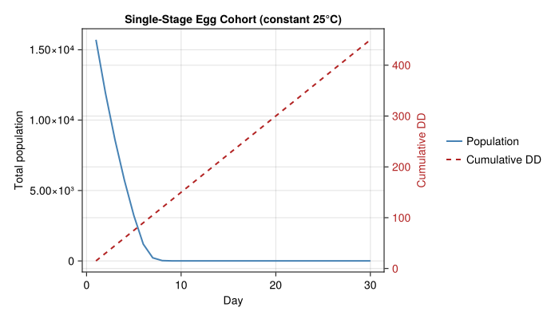
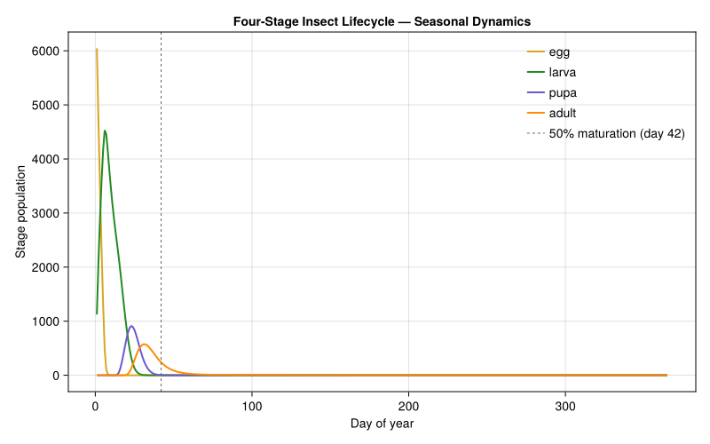

Getting Started with PBDMs
Simon Frost
- What is a Physiologically Based Demographic Model?
- Installation
- A Minimal Example: Single-Stage Insect Cohort
- Degree-Day Accumulation
- Running a Simulation
- Analyzing Results
- Multi-Stage Lifecycle
- The Supply/Demand Framework
- Metabolic Pool Allocation
- Temperature-Dependent Respiration
- Next Steps
Primary reference: (Manetsch 1976).
What is a Physiologically Based Demographic Model?
A Physiologically Based Demographic Model (PBDM) describes how populations of organisms grow and develop through time, driven by temperature and resource availability. Unlike matrix population models (which use fixed per-time-step transition probabilities) or integral projection models (which use continuous size-based kernels), PBDMs track populations through physiological time (degree-days) using distributed delay dynamics.
The core ideas are:
Physiological time: Development is measured in degree-days (DD), not calendar days. An organism accumulates
DD = max(0, T - T_threshold)each day.Distributed delay: Each life stage is subdivided into
ksubstages that create an Erlang-distributed maturation time (meanτ, varianceτ²/k).Supply/demand: Resource acquisition follows a demand-driven functional response where the ratio
φ = supply/demand(∈ [0,1]) scales all vital rates.
Installation
println("using Pkg")
println("Pkg.develop(path=joinpath(@__DIR__, \"..\", \"..\"))")using Pkg
Pkg.develop(path=joinpath(@__DIR__, "..", ".."))A Minimal Example: Single-Stage Insect Cohort
Let’s model a cohort of insect eggs developing in warm weather.
using PhysiologicallyBasedDemographicModels
using CairoMakie
# 1. Define a development rate model
# Eggs develop above 10°C, with upper limit at 35°C
dev_rate = LinearDevelopmentRate(10.0, 35.0)
# 2. Create a life stage with distributed delay
# k=20 substages, mean developmental time τ=100 DD, initial population=1000
egg_delay = DistributedDelay(20, 100.0; W0=1000.0)
egg_stage = LifeStage(:egg, egg_delay, dev_rate, 0.005) # μ=0.005 per DD
# 3. Create a population with just eggs
pop = Population(:insect, [egg_stage])
println("Substages: ", n_substages(pop)) # 20
println("Initial population: ", total_population(pop)) # 20000 (20 × 1000)
println("Delay variance: ", delay_variance(egg_delay)) # 500.0Precompiling packages...
16965.1 ms ✓ JSON
18728.7 ms ✓ Cairo_jll
8658.2 ms ✓ ColorBrewer
11123.9 ms ✓ HarfBuzz_jll
15253.3 ms ✓ libass_jll
47428.6 ms ✓ Distributions
14789.7 ms ✓ Pango_jll
21443.9 ms ✓ FFMPEG_jll
20187.3 ms ✓ Cairo
29494.1 ms ✓ Distributions → DistributionsChainRulesCoreExt
53559.1 ms ✓ KernelDensity
202196.7 ms ✓ Makie
76002.6 ms ✓ CairoMakie
13 dependencies successfully precompiled in 562 seconds. 264 already precompiled.
Precompiling packages...
2324.9 ms ✓ QuartoNotebookWorkerJSONExt (serial)
1 dependency successfully precompiled in 3 seconds
Precompiling packages...
12967.5 ms ✓ QuartoNotebookWorkerMakieExt (serial)
1 dependency successfully precompiled in 13 seconds
Precompiling packages...
13381.3 ms ✓ QuartoNotebookWorkerCairoMakieExt (serial)
1 dependency successfully precompiled in 13 seconds
Substages: 20
Initial population: 20000.0
Delay variance: 500.0Degree-Day Accumulation
Development rate depends on temperature:
# At 25°C: 25 - 10 = 15 degree-days per day
println(degree_days(dev_rate, 25.0)) # 15.0
# At 5°C: below threshold, no development
println(degree_days(dev_rate, 5.0)) # 0.0
# At 40°C: capped at T_upper - T_lower = 25
println(degree_days(dev_rate, 40.0)) # 25.015.0
0.0
30.0Running a Simulation
Create weather data and solve:
# Constant 25°C for 30 days
weather = WeatherSeries(fill(25.0, 30); day_offset=1)
# Create and solve the problem
prob = PBDMProblem(pop, weather, (1, 30))
sol = solve(prob, DirectIteration())
println(sol) # PBDMSolution(30 days, 1 stages, retcode=Success)PBDMSolution(30 days, 1 stages, retcode=Success)Analyzing Results
using Statistics
# Cumulative degree-day accumulation
cdd = cumulative_degree_days(sol)
println("Total DD after 30 days: ", round(cdd[end], digits=1)) # 450.0
# Population trajectory over time
initial_total = total_population(pop)
tp = total_population(sol)
println("Initial: ", round(initial_total, digits=1))
println("After day 1: ", round(tp[1], digits=1))
println("Final: ", round(tp[end], digits=1))
# Per-step growth rates
println("Mean λ: ", round(mean(sol.lambdas), digits=4))Total DD after 30 days: 450.0
Initial: 0.0
After day 1: 15707.3
Final: 0.0
Mean λ: 0.1483Population and degree-day trajectory
fig = Figure(size=(700, 400))
ax1 = Axis(fig[1, 1], xlabel="Day", ylabel="Total population",
title="Single-Stage Egg Cohort (constant 25°C)")
lines!(ax1, sol.t, tp, color=:steelblue, linewidth=2, label="Population")
ax2 = Axis(fig[1, 1], ylabel="Cumulative DD", yaxisposition=:right,
yticklabelcolor=:firebrick, ylabelcolor=:firebrick)
hidespines!(ax2)
hidexdecorations!(ax2)
lines!(ax2, sol.t, cdd, color=:firebrick, linewidth=2, linestyle=:dash,
label="Cumulative DD")
Legend(fig[1, 2],
[LineElement(color=:steelblue, linewidth=2),
LineElement(color=:firebrick, linewidth=2, linestyle=:dash)],
["Population", "Cumulative DD"], framevisible=false)
fig
Multi-Stage Lifecycle
Real organisms have multiple life stages. Here’s a 4-stage insect:
dev = LinearDevelopmentRate(10.0, 35.0)
stages = [
LifeStage(:egg, DistributedDelay(15, 80.0; W0=500.0), dev, 0.003),
LifeStage(:larva, DistributedDelay(25, 200.0; W0=0.0), dev, 0.008),
LifeStage(:pupa, DistributedDelay(10, 70.0; W0=0.0), dev, 0.002),
LifeStage(:adult, DistributedDelay(5, 150.0; W0=0.0), dev, 0.015),
]
pop = Population(:moth, stages)
# Or use the convenience constructor
pop2 = make_population(:moth,
[(:egg, 15, 80.0), (:larva, 25, 200.0), (:pupa, 10, 70.0), (:adult, 5, 150.0)],
dev; mortality=0.005)
# Simulate over a growing season with synthetic weather
weather = SinusoidalWeather(20.0, 10.0; phase=200.0)
prob = PBDMProblem(pop, weather, (1, 365))
sol = solve(prob, DirectIteration())
# When does 50% of maturation occur? (phenological midpoint)
mid = phenology(sol; threshold=0.5)
println("Phenological midpoint: day ", mid)
# Stage-specific trajectories
for i in 1:4
traj = stage_trajectory(sol, i)
peak_day = sol.t[argmax(traj)]
println("$(pop.stages[i].name): peak at day $peak_day")
endPhenological midpoint: day 42
egg: peak at day 1
larva: peak at day 6
pupa: peak at day 23
adult: peak at day 31Stage trajectory plot
stage_colors = [:goldenrod, :forestgreen, :slateblue, :darkorange]
stage_labels = [String(s.name) for s in pop.stages]
fig = Figure(size=(800, 500))
ax = Axis(fig[1, 1], xlabel="Day of year", ylabel="Stage population",
title="Four-Stage Insect Lifecycle — Seasonal Dynamics")
for i in 1:4
traj = stage_trajectory(sol, i)
lines!(ax, sol.t[1:length(traj)], traj, color=stage_colors[i],
linewidth=2, label=stage_labels[i])
end
vlines!(ax, [mid], color=:gray40, linestyle=:dash, linewidth=1,
label="50% maturation (day $mid)")
axislegend(ax, position=:rt, framevisible=false)
fig
The Supply/Demand Framework
Resource acquisition in PBDMs uses the Frazer-Gilbert functional response:
fr = FraserGilbertResponse(0.7)
# When supply greatly exceeds demand → acquire ≈ demand
println(acquire(fr, 1000.0, 10.0)) # ≈ 10.0
# When supply is scarce → acquire << demand
println(acquire(fr, 5.0, 100.0)) # ≈ 3.4
# The supply/demand ratio φ scales vital rates
φ = supply_demand_ratio(fr, 50.0, 100.0)
println("φ = ", round(φ, digits=3)) # ≈ 0.29510.0
3.4394583742433538
φ = 0.295Metabolic Pool Allocation
Organisms allocate resources in priority order:
pool = MetabolicPool(
80.0, # supply
[25.0, 30.0, 40.0, 20.0], # demands
[:respiration, :growth, :reproduction, :reserves]
)
alloc = allocate(pool)
println("Respiration: ", alloc[1]) # 25.0 (full)
println("Growth: ", alloc[2]) # 30.0 (full)
println("Reproduction:", alloc[3]) # 25.0 (partial!)
println("Reserves: ", alloc[4]) # 0.0 (nothing left)
φ = supply_demand_index(pool)
println("φ = ", round(φ, digits=3)) # 0.696Respiration: 25.0
Growth: 30.0
Reproduction:25.0
Reserves: 0.0
φ = 0.696Temperature-Dependent Respiration
# Leaf respiration: 3% of dry mass/day at 25°C, Q₁₀ = 2.3
leaf_resp = Q10Respiration(0.03, 2.3, 25.0)
println("At 15°C: ", round(respiration_rate(leaf_resp, 15.0), digits=4))
println("At 25°C: ", round(respiration_rate(leaf_resp, 25.0), digits=4))
println("At 35°C: ", round(respiration_rate(leaf_resp, 35.0), digits=4))At 15°C: 0.013
At 25°C: 0.03
At 35°C: 0.069Next Steps
- Cotton Plant Model: A full single-species plant PBDM with photosynthesis, respiration, and fruit development
- Coffee Berry Borer: An insect pest lifecycle with nonlinear development rates and density dependence
- Grapevine Carbon & Nitrogen: Multi-tissue plant model with carbon and nitrogen allocation
- Lobesia Overwintering: Diapause dynamics with latitude-dependent photoperiod induction
<div id="refs" class="references csl-bib-body hanging-indent">
<div id="ref-Manetsch1976" class="csl-entry">
Manetsch, Thomas J. 1976. “Time-Varying Distributed Delays and Their Use in Aggregative Models of Large Systems.” IEEE Transactions on Systems, Man, and Cybernetics 6 (8): 547–53. https://doi.org/10.1109/TSMC.1976.4309549.
</div>
</div>